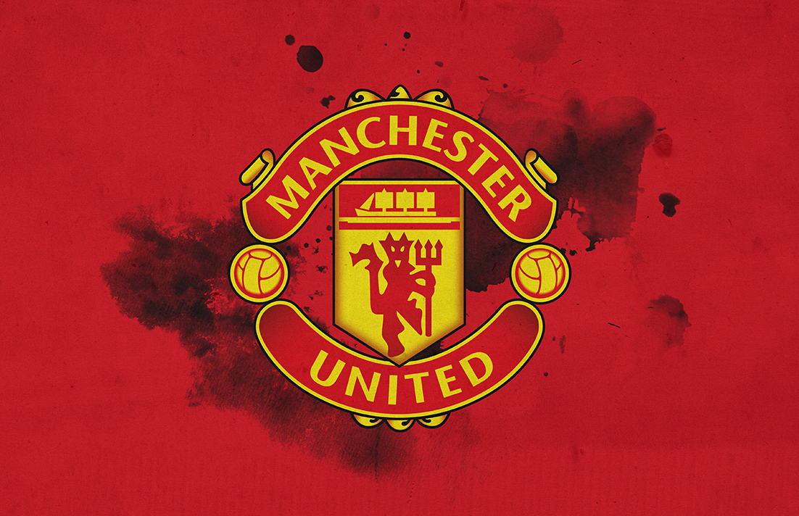
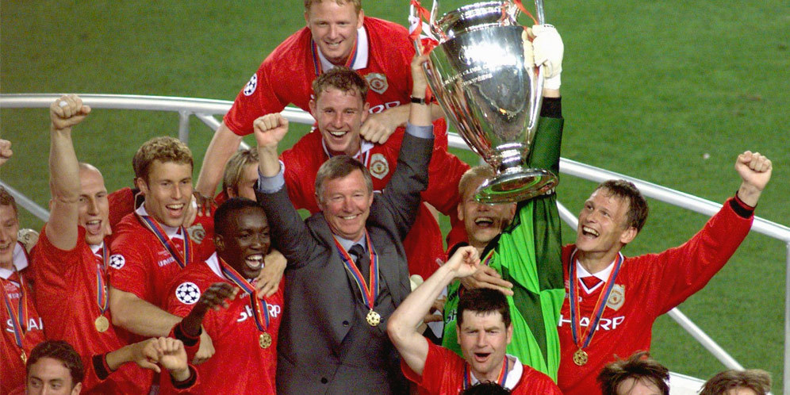

Sejarah Klub
Manchester United Football Club adalah sebuah klub sepak bola profesional Inggris yang berbasis di Old Trafford, Manchester Raya, yang bermain di Liga Inggris. Didirikan sebagai Newton Heath LYR Football Club pada tahun 1878, klub ini berganti nama menjadi Manchester United pada 1902 dan pindah ke Old Trafford pada tahun 1910. 
Prestasi Klub
Prestasi Manchester United - Piala pertama Manchester United adalah Piala Manchester, yang dimenangkan sebagai Newton Heath LYR pada tahun 1886.[70] Pada tahun 1908, klub memenangkan gelar liga pertama, dan memenangkan Piala FA untuk pertama kalinya pada tahun berikutnya. Manchester United memenangkan sebagian piala pada 1990-an, lima gelar liga, empat Piala FA, satu Piala Liga, lima Charity Shields (satu bersama), satu Liga Champions UEFA, Piala UEFA satu Piala Winners UEFA, satu Piala Super UEFA dan satu Piala Interkontinental. Klub saat ini memegang rekor untuk gelar yang sebagian top-divisi (20), sebagian Piala FA (11), dan yang sebagian penampilan Final Piala FA (18).[71] Manchester United memegang rekor untuk gelar Liga Premier yang paling (13), dan tim Inggris pertama yang memenangkan Piala Eropa pada tahun 1968. Piala terbaru klub datang pada April 2013 dengan gelar ke-20. Satu-satunya kehormatan besar bahwa Manchester United belum pernah menang adalah Liga Eropa,[72] meski tim mencapai perempat final 1984-1985 dan semifinal kompetisi prekursor turnamen, Piala Inter-Cities Fairs, pada tahun 1964-65.

Artikel
Berikut adalah beberapa artikel web tentang Manchester United.
Refrensi Lainnya